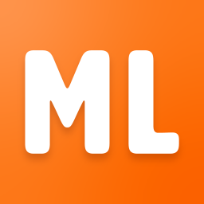

Machine Learning

Machine Learning is an app that was created to help anyone in a tool
shop or maker’s space. The app has been trained to recognize various
tools using a process known as machine learning. The user takes a
photo, or uses an existing photo to search Machine Learning’s
database for the tool description and safety tips. This app also
features general safety tips for the workshop.
License
This app has a attribution-noncommericial-sharealike license.
You are able to download, modify and/or share our app as long
as you share it with the same license and non commercially.